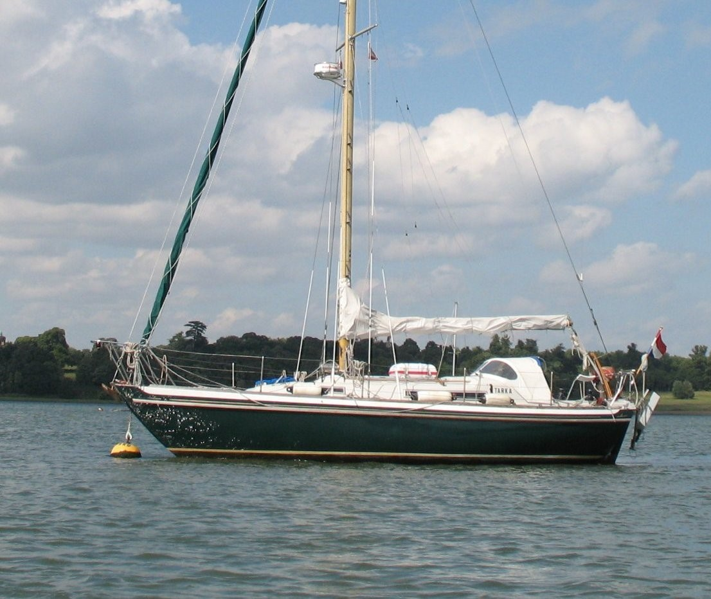
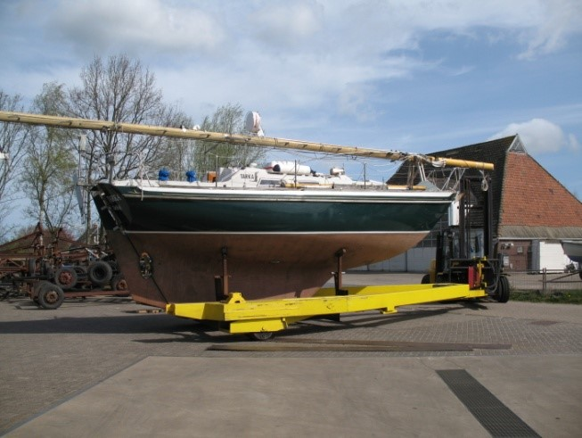
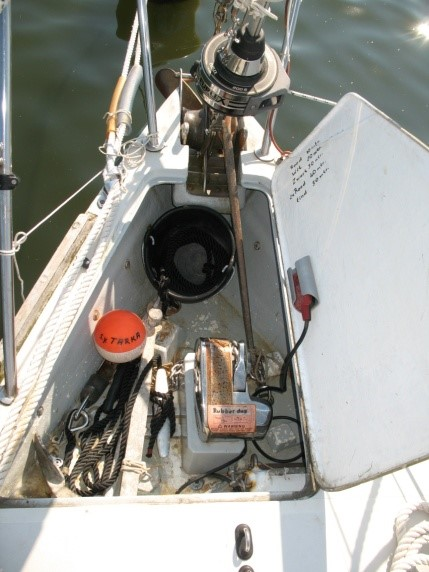
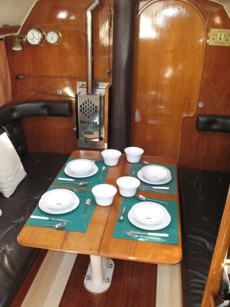
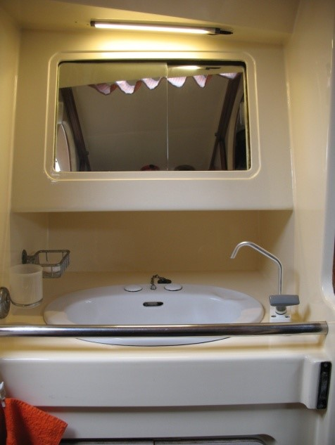
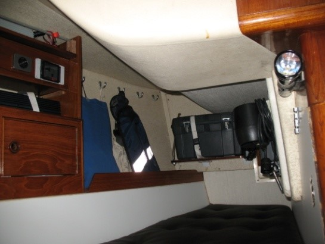

<!DOCTYPE HTML PUBLIC "-//W3C//DTD HTML 4.01 Transitional//EN">
<html><head></head>
<body><table style="text-align: left; width: 1024px;" border="0" cellpadding="2" cellspacing="2">
  <tbody>
    <tr>
      <td style="vertical-align: top;"><br>
      </td>
      <td style="vertical-align: top;">
      <h1 style="text-align: center;"><br>
      <span style="font-size: 24pt; font-family: &quot;Times New Roman&quot;,serif;"></span><span style="font-size: 24pt; font-family: &quot;Times New Roman&quot;,serif;">Technical
information concerning the sailingyacht "TARKA"</span></h1>
      <h3 style="text-align: center;">(With some pictures)</h3>
      </td>
    </tr>
  </tbody>
</table>
<br>
<table style="text-align: left; width: 1024px; margin-left: auto; margin-right: auto;" border="0" cellpadding="2" cellspacing="2">
  <tbody>
    <tr>
      <td style="vertical-align: top;"><br>
      <span style="font-style: italic; font-weight: bold;">Tarka on the
river Orwell in England.</span><br>
      </td>
    </tr>
  </tbody>
</table>
<br>
<table style="text-align: left; width: 1024px;" border="0" cellpadding="2" cellspacing="2">
  <tbody>
    <tr>
      <td style="vertical-align: top;">Tarka is a Nicholson 31,
designed and build in 1977 by Camper and Nicholsons at Gosport in the
UK <br>
under building number 50.<br>
She is a classical build long keel boat, now a days considered as a
heavy displacement boat. <br>
Dimensions: 9,32 x 3,12 x 1,52 mtr. Displacement: <br>
nearly 6 ton.&nbsp; <br>
Deck and superstructure sandwich constructed. <br>
She has a full S shaped hull which guarantees an easy and sea-kindly
character.&nbsp;&nbsp; <br>
For a demanding sailor who wishes to explore far away coasts, this
Nicholson is the ideal sailing yacht, as the present owner has
sufficiently proven with some very interesting voyages and is
completely and fully equipped to do so.The interior layout is, as might
expected, classical and very suitable for extended voyages at sea due
to the design, shape of the hull, sea kindness and the large water tank
of&nbsp; 330
ltr.&nbsp;&nbsp;&nbsp;&nbsp;&nbsp;&nbsp;&nbsp;&nbsp;&nbsp;&nbsp;&nbsp;&nbsp;
      <br>
A traditional&nbsp; S&nbsp; frame long keelboat. A real offshore
cruising yacht.Due to the work done on her, she can be sailed easily
single handed as has been done on many extensive trips by the present
owner.<br>
V.A.T. has been paid.<br>
      <br>
      <br>
      </td>
      <td style="vertical-align: top;"><br>
      <span style="font-weight: bold; font-style: italic;">A tradional
S frame long keelboat.</span><br>
      </td>
    </tr>
  </tbody>
</table>
<table style="text-align: left; width: 1024px;" border="0" cellpadding="2" cellspacing="2">
  <tbody>
    <tr>
      <td style="vertical-align: top;"><br>
      </td>
      <td style="vertical-align: top;"><span style="font-weight: bold;">Deck
equipment:</span> <br>
Underwater the hull has been protected by several layers of Coppercoat.<br>
Pulpit with a two coloured bow light Anchor winch: electrical, Lewmar,
recessed placed in anchor well.<br>
CQR anchor 35 Lb. With 50 mtr. SS 8 mm. chain.<br>
Fisherman anchor 15 Kg. The fisherman anchor can be attached to the SS
chain by means of a 10 mm. shackle.<br>
Anchor weight 15 Kg.<br>
Two large sized bronze bow rollers for chain and line.<br>
Chain stopper. <br>
Swim rope ladder (n.o.b.)<br>
Safety lines in the gangway.<br>
Teak rubbing stroke.<br>
Dingy: folding dingy Bananaboat, oars, outboard engine&nbsp; rack.<br>
&nbsp;The dingy can be sailed<br>
with dagger boards,&nbsp; rudder and mast. Sail, dagger boards, rudder
and mast (n.o.b.)<br>
Wood fender.<br>
6 fenders plus two large fenders.<br>
      </td>
    </tr>
  </tbody>
</table>
<table style="text-align: left; width: 1024px;" border="0" cellpadding="2" cellspacing="2">
  <tbody>
    <tr>
      <td style="vertical-align: top;">Solar panel on the garage.<br>
Life raft: 4 persons, Offshore type in container fitted on top of the
cabin.<br>
Winches: 4 pcs. Lewmar and Enkes. All ST type.<br>
4 cheek blocks with stoppers for reefing line, tack of the halfwinder,
preventer lines etc.<br>
Spray hood with windows and extra handrail aft. Very&nbsp; strong
construction.<br>
Telescopic spinnaker boom<br>
Cockpit tent with windows and flap doors and the required divisible
support tubes.<br>
Winter tarp. (n.o.b.)<br>
Sun yawing<br>
Wind vane steering: Bouwvaan with steering lines to the tiller, with
standard and storm blade.<br>
Outboard engine: Suzuki 1,5 HP, hung on the transom.<br>
Stern light on the push pit. <br>
Bruce stern anchor with chain and line.<br>
      </td>
    </tr>
  </tbody>
</table>
<table style="text-align: left; width: 1024px;" border="0" cellpadding="2" cellspacing="2">
  <tbody>
    <tr>
      <td style="vertical-align: top;"><br>
      <b style=""><i style=""><span style="font-size: 12pt; font-family: &quot;Times New Roman&quot;,serif;" lang="EN-GB">Tarka in St.Katharines Dock in London</span></i></b><br>
      </td>
      <td style="vertical-align: top;">
      <div style="text-align: left;"><br>
      </div>
      <span style="font-weight: bold; font-style: italic;">Cabin view
with C&amp;N plates.</span><br>
      </td>
    </tr>
  </tbody>
</table>
<span style="font-weight: bold;"><br>
</span>
<table style="text-align: left; width: 1024px;" border="0" cellpadding="2" cellspacing="2">
  <tbody>
    <tr>
      <td style="vertical-align: top;"><span style="font-weight: bold;">Mast
and sails:</span><br style="font-weight: bold;">
Alu keel stepped mast and boom, 2&nbsp; mast winches, one as ST. 2
winches on the boom with stopper.&nbsp;&nbsp;&nbsp;&nbsp; <br>
Lazy jacks for mainsail.<br>
Mast provided with safe mast steps.<br>
Mast support, so the mast can be laid over deck in the&nbsp; mast
support. (n.o.b.)<br>
Radar reflector fitted in top of the mast. Type: Lensref.<br>
Steam light and deck light.<br>
Tricolour top light, Windex.<br>
Halyards for mainsail, headsail, genoa&nbsp; and topping lift. <br>
Spinnaker boom, extendible. &nbsp;&nbsp;&nbsp; &nbsp;&nbsp;&nbsp;
&nbsp;&nbsp;&nbsp; &nbsp;&nbsp;&nbsp; &nbsp;&nbsp;&nbsp;
&nbsp;&nbsp;&nbsp; &nbsp;&nbsp;&nbsp; &nbsp;&nbsp;&nbsp;
&nbsp;&nbsp;&nbsp; &nbsp;&nbsp;&nbsp; <br>
Standing rigging in SS with oversized Hasselfors turnbuckles and
toggles.<br>
Extra fore stay for safety and also used for the clew of the
halfwinder. Can also be set aft of the fore stay with a SS pelican hook
to fit a storm jib with hanks.<br>
Reefing genoa 32 m².&nbsp; with Furlex reefing drum.<br>
Main sail 22 m². With 3 reefs. Sail cloth.&nbsp; <br>
Halfwinder 50 m². in chute.<br>
Jib 1 with hanks. (n.o.b.)<br>
Storm jib with hanks and sheets. (n.o.b.)<br>
Spinnaker&nbsp; 70 m². (n.o.b.)<br>
      </td>
    </tr>
  </tbody>
</table>
<table style="text-align: left; width: 1024px;" border="0" cellpadding="2" cellspacing="2">
  <tbody>
    <tr>
      <td style="vertical-align: top;"><b style=""><span style="font-size: 12pt; font-family: &quot;Times New Roman&quot;,serif;" lang="EN-GB">Lay-out:<span style="">&nbsp;&nbsp;&nbsp;&nbsp;&nbsp;&nbsp;&nbsp;&nbsp;
      <br>
      </span></span></b><span style="font-size: 12pt; font-family: &quot;Times New Roman&quot;,serif;" lang="EN-GB">See drawing.</span> </td>
      <td style="vertical-align: top;"><br>
      </td>
    </tr>
  </tbody>
</table>
<table style="text-align: left; width: 1024px;" border="0" cellpadding="2" cellspacing="2">
  <tbody>
    <tr>
      <td style="vertical-align: top;"><span style="font-weight: bold;">Fore
cabin:</span><br>
Two berth in V shape with triangle filling cushion, <br>
convertible to double berth.<br>
Underneath the berths spacious storage for provisions, <br>
storm jib, halfwinder, water hoses etc. <br>
Storage for the cockpit tent and divisible tubing.<br>
SS Mooring&nbsp; hook<br>
12 Volt submersible pump with hose.<br>
Storage for clothing, Firework(*), parts for the dinghy, hospitality
flags for nearly all Europe, <br>
complete set of signal flags. <br>
Escape hatch with ventilation.<br>
Access to the anchor chain.<br>
Cockpit cushions. Life jackets.<br>
      </td>
      <td style="vertical-align: top;"><br>
      <span style="font-weight: bold; font-style: italic;">Fore cabin</span><br>
      </td>
    </tr>
  </tbody>
</table>
<table style="text-align: left; width: 1024px;" border="0" cellpadding="2" cellspacing="2">
  <tbody>
    <tr>
      <td style="vertical-align: top;"><br>
      <span style="font-weight: bold; font-style: italic;">Lavac toilet
and sewagetank</span>.<br>
      </td>
      <td style="vertical-align: top;"><span style="font-weight: bold;">The
Heads:</span><br>
Porcelain wash-basin with hand and foot-pump, toilet storage locker.<br>
Under the wash-basin; hull fitting. Storage for anchor ball, cone, <br>
containers for methylated spirit, funnels, cleaning liquids etc. <br>
      <span style="font-weight: bold;">Toilet:</span> <br>
The well known and reliable Lavac vacuum toilet with hull fitting.<br>
Wardrobe locker.<br>
Sewage tank approx. 55 Ltr.<br>
Heads / washroom can be separated by two sliding doors to fore-cabin<br>
and main-cabin room<br>
      <br>
      </td>
      <td style="vertical-align: top;"><br style="font-weight: bold; font-style: italic;">
      <span style="font-weight: bold; font-style: italic;">Washbasin
and toilet locker.</span><br>
      </td>
    </tr>
  </tbody>
</table>
<table style="text-align: left; width: 1024px;" border="0" cellpadding="2" cellspacing="2">
  <tbody>
    <tr>
      <td style="vertical-align: top;"><br>
      <span style="font-weight: bold; font-style: italic;">Quarter
berth, searchlight, toolbox etc,</span><br>
      </td>
      <td style="vertical-align: top;">The main cabin with two
extendible settees/berths with sail cloths. Pilot berth to PS. Now in
use as storage for two folding bikes. (pilot berth-cushion(n.o.b.)<br>
Total number of berths : 6 if the pilot berth is
used.&nbsp;&nbsp;&nbsp;&nbsp;&nbsp;&nbsp;&nbsp;&nbsp;&nbsp;&nbsp;&nbsp;&nbsp;&nbsp;&nbsp;&nbsp;&nbsp;&nbsp;&nbsp;&nbsp;&nbsp;
      <br>
Barometer.<br>
Lots of storage space behind the back and underneath of the settees.
One can store provisions for several months! <br>
      <br>
      </td>
    </tr>
    <tr>
      <td style="vertical-align: top;">Underneath the PS and SB settees
several boxes with a host of SS shackles, fittings, electric mat.,
sewing kits, Speedy stitcher, gas connection couplings, spare bulbs
etc.<br>
Taylors drip-feed cabin heater with flame protection. Runs on diesel or
paraffin. No electrical power usage. <br>
Aft of the chart-table a very useful and spacious quarter berth.<br>
In the quarter berth, among other things: handheld searchlight, twice
an Autohelm autopilot, very extensive tool box, automatic life jacket,
survival suit, insulated boots.<br>
Separate box with spare parts for the main engine such as, fuel- and
oil filter, impellers, sensors, cylinder head gasket, V belts etc.<br>
      <br>
      </td>
      <td style="vertical-align: top;"><br>
      <span style="font-weight: bold; font-style: italic;">Taylors
heating.</span><br>
      </td>
    </tr>
    <tr>
      <td style="vertical-align: top;"><br>
      <span style="font-weight: bold; font-style: italic;">Chart table
with part of the instruments.</span><br>
      </td>
      <td style="vertical-align: top;">Sturdy table with fiddles,
foldable.&nbsp;&nbsp;&nbsp;&nbsp;&nbsp; Taylors heating.<br>
Galley with twin sinks, fresh- and saltwater foot pumps.<br>
Two burner SS galley range with glass door oven, flame protected,
electrical ignition.<br>
Semi gimballed small table, perfect working at sea. Cups and plates
will stay steady on this table.<br>
Storage for pots, pans, pressure cooker and cutlery.<br>
The original Camper andNicholsons, with C&amp;N emblem, plates are
still fully present.<br>
Entrance via two manholes to the water tank of app. 330 Ltr.<br>
An Old fashioned&nbsp; ice box&nbsp; app. 80 Ltr.<br>
      </td>
    </tr>
    <tr>
      <td style="vertical-align: top;"><br>
A very deep bilge with manual pump operated from the cockpit, with
handle. In case of emergency, usage of&nbsp; the submersible pump.<br>
Access to the main engine with three steps.<br>
Fire-extinguisher.&nbsp; <br>
All berths provided with lee-cloths, except the quarter-berth of course.<br>
On SB a very useful chart table who accepts half a BA chart. Sufficient
chart storage underneath.<br>
All the required navigation aids as divider, pencils, eraser,
chart-loupe etc.&nbsp;&nbsp;&nbsp; &nbsp;&nbsp;&nbsp;
&nbsp;&nbsp;&nbsp; &nbsp;&nbsp;&nbsp; &nbsp;&nbsp;&nbsp;
&nbsp;&nbsp;&nbsp; &nbsp;&nbsp;&nbsp; <br>
Locker for Pilots, manuals, ships-papers, several informations on
harbours etc. Manuals on all equipment.<br>
Medicine locker with the usual equipment.&nbsp; <br>
Anchor-light wit LED.<br>
      <br>
      </td>
      <td style="vertical-align: top;"><br>
      <span style="font-weight: bold; font-style: italic;">SS galley
range/oven, gimballed table.</span><br>
      </td>
    </tr>
    <tr>
      <td style="vertical-align: top; width: 50%;"><span style="font-weight: bold;">Nautical
/ navigation:</span><br>
The required navigation-lights.<br>
Electrical power box with group-switches, safety switches with LED
indication.<br>
Shore connection with differential switch, cables, extension cable and
charger.<br>
Converter 12 Volt DC to 230 Volt AC. 200 Watt. &nbsp;&nbsp;&nbsp;
&nbsp;&nbsp;&nbsp; &nbsp;&nbsp;&nbsp; <br>
Steering-compass: Sestrel Moore, with light and
Pelorus.&nbsp;&nbsp;&nbsp; &nbsp;&nbsp;&nbsp; &nbsp;&nbsp;&nbsp; <br>
Chart plotter: Raymarine eS75. Can be fixed under the spray hood on SB
site. With Navionics chart.<br>AIS transponder ( 2019) Class B Em-Trak B350 5Watt SOTDMA connected to the Raymarine plotter.<br>
Log / depth: Autohelm Bidata near the chart table and Multi repeater in
the cockpit.<br>
AIS receiver: NASA marine, coupled to the GPS.<br>
GPS navigator: Furuno GP-32.<br>
      </td>
      <td style="vertical-align: top;"><br>
      <span style="font-weight: bold; font-style: italic;">Berths
provided with lee-cloths.</span><br>
      </td>
    </tr>
  </tbody>
</table>
<table style="text-align: left; width: 1024px;" border="0" cellpadding="2" cellspacing="2">
  <tbody>
    <tr>
      <td style="vertical-align: top;">Radar: Raytheon R10XX.<br>
VHF: Sailor RT 144, with ATIS, coupled SWR meter. Can be operated on
full power on all channels.<br>
Handheld VHF: ICOM IC-M71.<br>
Navtex: Lokata type 1 with paper-printer. Spare paper rolls.<br>
Radio / CD player: JVC AM/FM with two speakers.<br>
Communication radio: Yeasu FRG-7700. <br>
AM-SSB with lower and upper side band. Range 0  30 Mc<br>
Steiner ships binoculars 7 x 50.<br>
Flashlight: large Mag-Lite.<br>
Auto-pilot: Autohelm 2000 and Autohelm 800.&nbsp; <br>
Radar reflector: in top of the mast a Lensref.<br>
      </td>
    </tr>
  </tbody>
</table>
<table style="text-align: left; width: 1024px;" border="0" cellpadding="2" cellspacing="2">
  <tbody>
    <tr>
      <td style="vertical-align: top; width: 50%;"><span style="font-weight: bold;">Engine:</span> <br>
Yanmar 2 QM 20. Two cylinder with direct injection, valve-lifter,
starter handle, filters, water separator.<br>
Fuel tank with level gauge, dirt collector with drainage.&nbsp; <br>
Capacity app. 70 Ltr.<br>
Morse single handle control in the cockpit.<br>
Alarms: optical and acoustical for oil pressure, water temperature and
battery.<br>
Separate vacuum lube oil extractor. (n.o.b.)<br>
Consumption of this engine is very moderate. On a calm sea at a speed
of 5 consumption will be app. 1,1
Ltr./hr.&nbsp;&nbsp;&nbsp;&nbsp;&nbsp;&nbsp;&nbsp;&nbsp;&nbsp;&nbsp;&nbsp;&nbsp;&nbsp;&nbsp;&nbsp;&nbsp;&nbsp;&nbsp;&nbsp;&nbsp;&nbsp;&nbsp;&nbsp;&nbsp;&nbsp;&nbsp;&nbsp;&nbsp;&nbsp;&nbsp;&nbsp;&nbsp;&nbsp;&nbsp;&nbsp;&nbsp;&nbsp;&nbsp;&nbsp;&nbsp;&nbsp;&nbsp;&nbsp;&nbsp;&nbsp;&nbsp;&nbsp;&nbsp;&nbsp;&nbsp;&nbsp;&nbsp;&nbsp;&nbsp;&nbsp;
<br>
Many spare part such as: impellers, V belts, temp.- and oil sensor, <br>gaskets,
oil filters, cylinder head gasket, zinc anodes
etc.&nbsp;&nbsp;&nbsp;&nbsp;&nbsp;&nbsp;&nbsp;&nbsp;&nbsp;&nbsp;&nbsp;&nbsp;&nbsp;&nbsp;&nbsp;&nbsp;&nbsp;&nbsp;&nbsp;&nbsp;&nbsp;&nbsp;
&nbsp;&nbsp;&nbsp; <br>
In the quarter berth a very extensive toolbox.&nbsp; <br>
      </td>
      <td style="vertical-align: top;">
      <div style="text-align: center;"><br>
      </div>
      <div style="text-align: center;"><span style="font-weight: bold; font-style: italic;">2 cylinder 20 HP diesel.</span><br>
      </div>
      </td>
    </tr>
  </tbody>
</table>
<table style="text-align: left; width: 1024px;" border="0" cellpadding="2" cellspacing="2">
  <tbody>
    <tr>
      <td style="vertical-align: top;"><br>
      <span style="font-weight: bold; font-style: italic;">Cockpitt,
tiller, wind vane steering.</span><br>
      </td>
      <td style="vertical-align: top;"><span style="font-weight: bold;">Cockpit:
&nbsp;</span>&nbsp;&nbsp; <br>
&nbsp;&nbsp;&nbsp; &nbsp;&nbsp;&nbsp; &nbsp;&nbsp;&nbsp;
&nbsp;&nbsp;&nbsp; &nbsp;&nbsp;&nbsp; &nbsp;&nbsp;&nbsp;
&nbsp;&nbsp;&nbsp; &nbsp;&nbsp;&nbsp;&nbsp; <br>
The cockpit has safe, deep and comfortable benches. The cockpit storage
locker contains hooks with a host of mooring lines, spinnaker sheets,
clew line, preventer lines etc.<br>
Space for 2 spare gas bottles (5 Kg.)*, jerry can emergency water,
paraffin, fenders, funnel, oars etc.<br>
Separate gas bun with gas discharge. The gas bun suits the well known
Dutch propane bottle of 5 Kg.<br>
Space for 2 extra diesel jerry cans*.<br>
Underneath the cockpit back seat space for several 5 Ltr. jerry cans
for sump oil, engine oil*, reduction gear oil*, paraffin, methylated
spirit, discharge pump for diesel <br>
jerry can.<br>
Bilge pump with handle.<br>
&nbsp;&nbsp;&nbsp;&nbsp;&nbsp; &nbsp;&nbsp;&nbsp; &nbsp;&nbsp;&nbsp;
&nbsp;&nbsp;&nbsp; &nbsp;&nbsp;&nbsp; <br>
      <br>
      </td>
    </tr>
    <tr>
      <td style="vertical-align: top;"><br>
      <span style="font-weight: bold; font-style: italic;">Tarka
somewhere in Norway.</span><br>
      </td>
      <td style="vertical-align: top;"><br>
      <span style="font-weight: bold; font-style: italic;">Tarka in
Svalbard (Spitsbergen.)</span><br>
      </td>
    </tr>
  </tbody>
</table>
<table style="text-align: left; width: 714px; height: 32px;" border="0" cellpadding="2" cellspacing="2">
  <tbody>
    <tr>
      <td style="vertical-align: top;"><div style="text-align: center;"><span style="font-weight: bold; font-style: italic;">Remark: articles marked with asterix (*) are not included in the sale! </span><br style="font-weight: bold; font-style: italic;"><span style="font-weight: bold; font-style: italic;">(n.o.b.) Not On Board but included in the sale.</span><br></div>
      </td>
    </tr>
  </tbody>
</table>
<br>
<br></body></html>